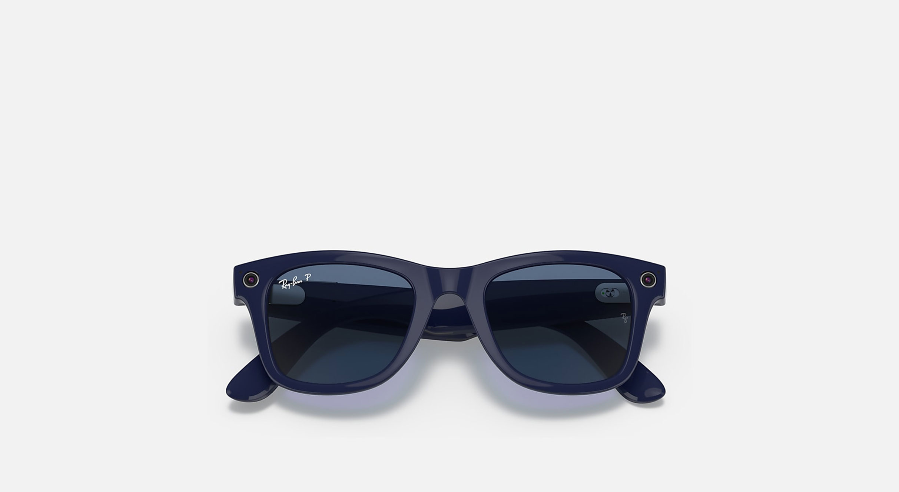
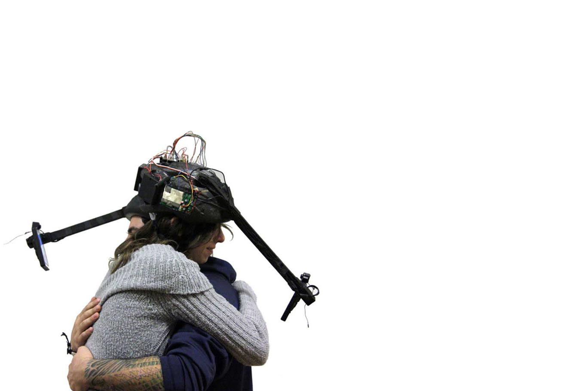

Halloween build — go make something fun
· Reel
Dan Chen — Seattle · AI Product Designer & Hardware Prototyper
Hardware, software, and AI — prototyped fast. Currently at Meta, designing and prototyping next-generation smart glasses and wearables, including Meta Ray-Ban Smart Glasses.
See latest builds ↓ Selected work Résumé (PDF)

Latest work — updated 6 Nov 2026
New builds land on Instagram first. These are the latest reels from @danchen.me — ESP32 displays, wearables, robots, and light.
Videos above play inside Instagram’s own embed player. If an embed doesn’t load in your browser, tap the reel link below it — the links always work.
· Reel

· Reel

· Reel

· Reel

· Reel

· Reel

· Reel

· Reel

· Reel

· Reel

· Reel

· Reel
Feed refreshed from Instagram on 6 Nov 2026. Thumbnails are hosted by Instagram and can expire — the reel links always work. To refresh: replace ig-feed.json with a new export (see README.md).
Selected work — from the original site
Curated, not chronological. Full case studies live in the work archive at dankc.com.
Meta · Wearables

Industrial Design Architect / Hardware Prototyper. Designing and prototyping device interaction for next-generation smart glasses.
Case study →Culture Biosciences · Senior Engineer

Designed and manufactured modular bioreactor systems and auto-sampling hardware, with human-factors work throughout.
Case study →Art & design

Desktop robots that enhance feelings of team spirit — comfort objects, made to be patted, held, and lived with.
Case study →Art & design

When we hug someone, we can’t see each other’s face. A robot that explores that gap — touch, distance, and attention.
Case study →Exhibition · Vitra Design Museum

An interactive installation for a final rite of passage, shown in Hello Robot at the Vitra Design Museum.
Case study →Lab experiment

A 3-axis CNC machine, built from cardboard. The “Hello World” of making machines that make things.
Case study →Now — weekly builds
ESP32, Web Bluetooth, and LLMs as a prototyping partner. I build it, film it, and ask makers and artists what to change next.
About

Education: MAS, MIT Media Lab · MFA Digital Media, RISD · BFA Communication Design, UConn.
Experience: Meta · Culture Biosciences (Senior Engineer) · MIT Lifelong Kindergarten · IDEO · Johnson & Johnson.
Recognition: TEDx Vienna & TEDx Bologna speaker · Exhibited at Vitra Design Museum, MAK Wien, Design Museum Gent, Seoul Museum of Art, Ars Electronica · Featured in CNET, The Verge, Engadget, Mashable, and The Huffington Post.
Core skills: AI product design · human-AI interaction · industrial design · hardware prototyping · device interaction · mechanical engineering · HW UX · concept-to-production · behavioral science · robotics.
Contact
Interested in collaborating, or discussing AI product design roles? Reach out directly.